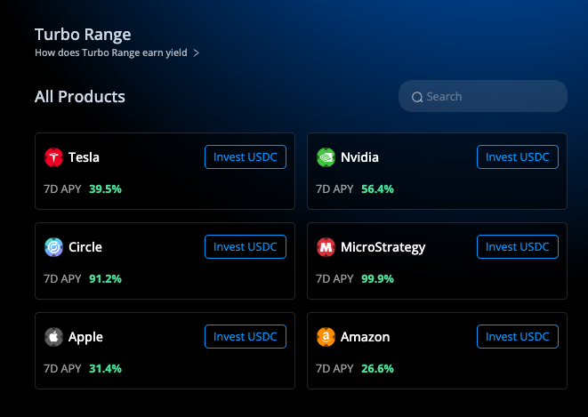

DeGate
DeGate
Turbo Range: guadagnare commissioni sulle proprie azioni
Una guida per comprendere perché detenere azioni su blockchain apre nuove opportunità di rendimento — e come Turbo Range le rende accessibili a chiunque.
1. Cosa cambia con le azioni on-chain
Con un broker tradizionale, le azioni restano ferme nel conto titoli: l'unico modo per guadagnare è vendere a un prezzo più alto. Se il mercato è laterale, il capitale non produce nulla.
Le azioni "on-chain" sono versioni tokenizzate di titoli reali (Tesla, Nvidia, Apple…) registrate su blockchain, ancorate 1:1 al prezzo dell'azione sottostante. La differenza? La blockchain è un mercato attivo 24/7: ogni scambio genera una commissione — e nel mondo blockchain, chiunque può incassarla.
Immagina un ufficio di cambio in aeroporto. Quando un viaggiatore cambia euro in dollari, il cambiavalute guadagna una commissione. Turbo Range ti trasforma nel cambiavalute: il tuo capitale facilita gli scambi, e per ogni operazione incassi una fee — automaticamente, 24/7, senza dover fare nulla.
Questa attività si chiama liquidity providing: i tuoi asset vengono utilizzati come controparte per gli scambi di altri utenti. Più il prezzo oscilla, più scambi avvengono, più commissioni guadagni — la volatilità diventa tua alleata.
2. Cos'è una liquidity pool
Prima di capire Turbo Range, è utile comprendere il meccanismo alla base: la liquidity pool (pool di liquidità).
Una liquidity pool è un deposito condiviso di due asset — ad esempio Nvidia e USDC — gestito interamente da un programma automatico (chiamato smart contract) che vive sulla blockchain. Non c'è un intermediario umano: tutto è governato dal codice.
Come funziona
Il prezzo all'interno della pool non è deciso da un operatore centrale, ma viene determinato da una formula matematica che regola automaticamente il rapporto tra i due asset. Quando qualcuno compra Nvidia dalla pool, la quantità di Nvidia diminuisce e il suo prezzo sale; quando qualcuno vende, accade il contrario. Il meccanismo si auto-bilancia costantemente.
Chiunque può fornire liquidità a una pool — non serve essere un'istituzione o avere permessi speciali. Basta depositare i propri asset e iniziare a guadagnare una quota delle commissioni generate dagli scambi.
In sintesi: una liquidity pool è un mercato decentralizzato e automatizzato dove chiunque può partecipare come "controparte" degli scambi — e guadagnare dalle commissioni. Lo smart contract garantisce che tutto funzioni in modo trasparente, senza che nessuno possa manipolare il processo.
Come si generano le commissioni — Video
Un breve video che illustra il meccanismo di guadagno dalle commissioni di scambio.
3. Come funziona Turbo Range
Turbo Range è lo strumento di DeGate che rende il liquidity providing semplice, automatico e accessibile anche a chi non ha esperienza con le criptovalute.
Il funzionamento si riassume in tre passaggi:
- Scegli l'asset Seleziona su quale mercato vuoi operare: azioni USA (Tesla, Nvidia, Apple…), oro o Bitcoin.
- Imposta un intervallo di prezzo Definisci una fascia di prezzo entro cui vuoi fornire liquidità. Il sistema propone automaticamente un range ottimale. Finché il prezzo resta in quell'intervallo, le commissioni si accumulano.
- Deposita e parti Puoi investire con un solo token (ad esempio solo USDC) oppure con entrambi i token della coppia (ad esempio Nvidia + USDC). Il sistema gestisce automaticamente la conversione e l'allocazione all'interno della pool. Con uno o due click la posizione è attiva.
Una volta aperta la posizione, il sistema converte e distribuisce il capitale tra i due asset della coppia in base al prezzo corrente e all'intervallo scelto. Da quel momento, ogni scambio che avviene nel range genera commissioni a tuo favore.
I fondi restano sempre nel tuo portafoglio. DeGate non ha accesso, non custodisce e non può movimentare il capitale. Solo tu puoi aprire, modificare o chiudere la posizione. È un modello chiamato "self-custody".

4. Come cambia la posizione al variare del prezzo
La tua posizione è composta da due asset (es. Nvidia + USDC). Il rapporto cambia automaticamente in base al prezzo. Usa il cursore per simularlo:
I tre scenari possibili
Il prezzo resta nel range
Genera commissioni costantemente, 24/7, da ogni scambio nel range.
Il prezzo sale oltre il limite superiore
La posizione diventa 100% USDC. Esci in profitto: hai venduto progressivamente in salita + incassato tutte le commissioni.
Il prezzo scende sotto il limite inferiore
La posizione diventa 100% token. Il valore in dollari cala, ma le commissioni accumulate attenuano la perdita. Puoi mantenere, riallineare il range o chiudere.
Punto chiave: le commissioni guadagnate nel range sono tue e non vengono mai restituite. Nello scenario positivo amplificano il guadagno; in quello negativo riducono la perdita effettiva.
5. Strategie di posizionamento
Puoi posizionare il range in modo strategico in base alla tua visione di mercato. La scelta dell'intervallo è essa stessa una strategia — ecco le tre principali:
🟢 Take Profit — "Sei rialzista"
Range sopra il prezzo attuale
Se il prezzo sale ed entra nel range, la posizione vende progressivamente il token per USDC, incassando commissioni ad ogni scambio. Se supera il limite superiore, ti ritrovi con 100% USDC — un take profit automatico + fee.
Ideale quando: credi che l'asset salirà e vuoi incassare gradualmente, senza rischiare di vendere troppo presto o aspettare troppo.
🔴 Buy the Dip — "Vuoi accumulare a sconto"
Range sotto il prezzo attuale
Se il prezzo scende ed entra nel range, la posizione compra progressivamente il token con i tuoi USDC, a prezzi sempre più bassi, guadagnando commissioni. Se scende oltre, hai 100% token accumulato a sconto.
Ideale quando: pensi che l'asset possa scendere nel breve ma credi nel suo valore a lungo termine. Il range accumula per te, senza monitorare.
⚖️ Neutrale — "Massimizza le commissioni"
Range stretto e centrato sul prezzo attuale
Più il range è concentrato, più alta è la densità di commissioni per dollaro investito. Ogni oscillazione genera scambi e fee a tuo favore. È la strategia ideale per mercati laterali o asset con alta volatilità intraday senza trend chiaro.
Ideale quando: il mercato consolida e vuoi massimizzare il rendimento. Richiede un monitoraggio più frequente perché un range stretto può essere "rotto" da un movimento brusco.
Guida rapida
| La tua visione | Strategia | Range | Risultato |
|---|---|---|---|
| 📈 Salirà | Take Profit | Sopra il prezzo | Vendi in salita + fee |
| 📉 Scenderà | Buy the Dip | Sotto il prezzo | Accumuli a sconto + fee |
| ➡️ Laterale | Neutrale | Stretto, centrato | Massime commissioni |
Il punto chiave: a differenza del semplice "compra e tieni", Turbo Range ti permette di esprimere la tua visione di mercato — e di guadagnare commissioni in ogni caso, finché il prezzo resta nel range.
6. Confronto: semplice detenzione vs. Turbo Range
Per capire il valore aggiunto di Turbo Range, confrontiamo il classico "compra e tieni" con una posizione Turbo Range attiva.
| Detenzione classica | Turbo Range | |
|---|---|---|
| Guadagno se il prezzo sale | ✓ Sì | ✓ Sì + commissioni |
| Guadagno se il prezzo è stabile | ✗ No | ✓ Sì, dalle commissioni |
| Rendimento annualizzato indicativo | Solo rivalutazione | 40%–100%+ da commissioni |
| Operatività del mercato | Lun–Ven, orari borsa | 24/7, inclusi weekend |
| Custodia del capitale | Presso il broker | Nel tuo portafoglio |
| Intermediari richiesti | Broker, banca, depositario | Nessuno (self-custody) |
La detenzione classica e Turbo Range non si escludono a vicenda. È possibile destinare una parte del portafoglio al Turbo Range per generare rendimento aggiuntivo, mantenendo il resto in modalità tradizionale.
7. Calcola i potenziali rendimenti
Per visualizzare la crescita del capitale nel tempo, è disponibile un calcolatore di interesse composto con tassi aggiornati in tempo reale dai pool di Turbo Range.
Lo strumento permette di impostare capitale iniziale, tasso di rendimento e orizzonte temporale, mostrando sia il saldo finale che il dettaglio anno per anno.
Calcolatore di Interesse Composto
Simula la crescita del capitale con i tassi reali dei pool Turbo Range. Include grafico e dettaglio annuale.
Il calcolatore è utile per rendere tangibile il potenziale del reinvestimento delle commissioni su orizzonti di 1, 3 o 5 anni.
8. Cosa considerare
Turbo Range offre opportunità interessanti, ma è importante essere consapevoli di alcuni aspetti:
Rischio di prezzo
Se il prezzo dell'asset scende sotto il range, la posizione si converte interamente nel token e il valore in dollari sarà inferiore all'investimento iniziale. Per questo è consigliabile usare Turbo Range solo su asset che sei disposto a detenere anche in caso di calo.
Gestione attiva opzionale
Se il prezzo esce dal range, la posizione smette di generare commissioni. Puoi scegliere di aspettare, riallineare l'intervallo o chiudere la posizione. Non c'è obbligo di intervento, ma un monitoraggio periodico è consigliato.
Contesto blockchain
I token azionari vivono su blockchain (Solana/Ethereum). Si interagisce tramite un portafoglio digitale. L'app DeGate semplifica l'esperienza, ma resta un contesto diverso dal conto titoli tradizionale.
Rendimenti variabili
I rendimenti indicati (40-100%+) sono basati su dati storici e possono variare. Periodi di bassa volatilità o basso volume di scambi producono commissioni inferiori.
9. Riepilogo
Le azioni on-chain non sono solo titoli: sono strumenti produttivi. Con Turbo Range, metti il tuo capitale a disposizione degli scambi e incassi una commissione su ogni operazione — come un cambiavalute digitale. Il risultato è un rendimento aggiuntivo rispetto alla sola rivalutazione del prezzo, attivo anche in mercati laterali, 24 ore su 24, senza intermediari, con i fondi sempre nel tuo portafoglio.
Per approfondimenti, simulazioni o contatti: